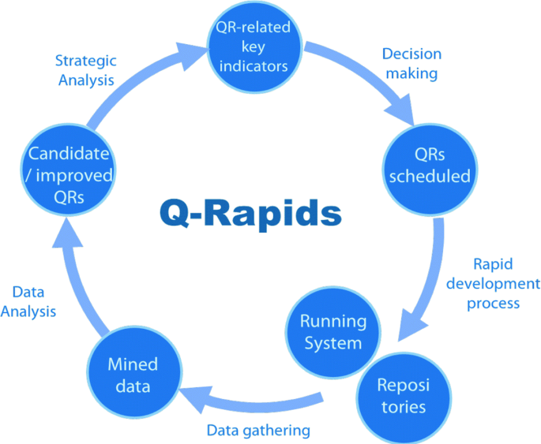

Fase 1 - Estabelecer os requisitos de avaliação
1. Propósito da avaliação
1.1 Produto, domínio e versão a ser analisado:
O produto a ser analisado é o AgroMart, especificamente a sua API na versão 0.1.0.
Nome do Produto:
Agromart
Resumo do Projeto:**
O Agromart é uma plataforma digital criada para conectar agricultores familiares a consumidores, facilitando a divulgação e comercialização de produtos agrícolas, especialmente no contexto de isolamento social gerado pela pandemia da COVID-19. A solução inclui um aplicativo para agricultores divulgarem seus produtos e uma interface voltada para consumidores encontrarem e contatarem produtores locais.
Objetivo Principal:
Promover o acesso direto entre agricultores familiares e consumidores, fortalecendo as Comunidades que Sustentam a Agricultura (CSAs) por meio da tecnologia.
Público-Alvo:
Primário: Agricultores familiares e co-agricultores participantes de CSAs.
Secundário: Consumidores interessados em produtos locais e orgânicos, com foco em alimentação saudável e apoio à agricultura sustentável.
Problemas que Resolve:
- Falta de visibilidade dos produtos dos agricultores.
- Dificuldade de contato direto entre produtores e consumidores.
- Necessidade de adaptar a comercialização ao contexto digital.
- Ausência de plataformas específicas para CSAs.
- Funcionalidades-Chave:
- Cadastro de pontos de venda com produtos, preços, localização e contatos.
- Busca por lojas próximas usando mapas e filtros.
- Contato direto via aplicativo de mensagens.
- Integração com meio de pagamento digital.
- Plataforma web para gestão e acompanhamento.
- App dedicado para co-agricultores.
Diferenciais:
- Foco em CSAs e agricultura familiar.
- Design orientado à usabilidade e contexto rural.
- Abordagem open source, permitindo colaboração e transparência.
- Envolvimento contínuo de professores e estudantes da UnB-FGA.
Estágio Atual:
Em desenvolvimento contínuo com versão open source, integração com meios de pagamento e apoio institucional da UnB-FGA.
1.2 Objetivo em relação a avaliação
O objetivo é obter um laudo técnico sobre sua qualidade, indicar pontos para melhoria e adequar o produto às normas de qualidade.
1.3 Aspectos de qualidade a serem avaliados
Dentre os critérios definidos pela norma ISO/IEC 25010, escolhemos priorizar manutenibilidade, confiabilidade e segurança, devido à baixa cobertura de testes automatizados na aplicação, o que torna esses aspectos críticos para garantir a estabilidade e evolução segura do sistema.
A tabela abaixo apresenta o nível de interesse atribuído a cada aspecto de qualidade, em uma escala de 1 (pouco interesse) a 5 (grande interesse):
| Aspecto de Qualidade | Nível de Interesse |
|---|---|
| Manutenibilidade | 5 |
| Segurança | 4 |
| Confiabilidade | 4 |
| Eficiência de performance | 2 |
| Compatibilidade | 2 |
| Adequação Funcional | 1 |
| Usabilidade | 1 |
| Portabilidade | 1 |
2. Tipo de produto a ser avaliado
2.1 Descrição geral do produto, ambiente e dados
O AgroMart possui 26 funcionalidades no total, sendo 15 voltadas para co-agricultores e 11 para administradores. As principais funcionalidades incluem:
üõí Compras:
- Adicionar ao carrinho
- Comprar cesta
- Comprar produto
- Comprar planos
⚙️ Gerenciamento:
- Interagir com Produtos
- Interagir com Cestas
- Interagir com Co-agricultores
- Interagir com Pedidos
Estas funções concentram o uso principal da aplicação e, por isso, serão o foco da avaliação.
üë§ Usuários
O público-alvo são pessoas com pouco conhecimento técnico em informática. Apenas o administrador (agricultor) precisa ter maior familiaridade com a aplicação para cadastrar produtos, gerenciar pedidos e interagir com demais usuários.
üîç Escopo da Avalia√ß√£o
A análise será focada principalmente na API, utilizando como massa de dados o próprio código disponível no GitHub e dados iniciais fornecidos pela aplicação.
üíª Janelas de intera√ß√£o mais relevantes:
- Tela de cadastro e login
- Tela de compras (produtos, cestas, planos)
- Área de notificações e histórico
- Painel do administrador (produtos, co-agricultores, lojas)
2.2 Categoria do produto
O produto se enquadra no modelo de Pressman como um Software Comercial por ter uma demanda de mercado para realizar automações da sociedade e oferece soluções para a área do agronegócio.
Já na IEEE 1062 o produto se enquadraria no tipo COTS (Commercial Off-The-Shelf-Software) já que os requisitos dependem de vários usuários e não tem distinção entre clientes. Todos usam o mesmo produto.
Modelo de qualidade
A equipe irá utilizar o modelo de qualidade Square, junto com as metologias Q-Rapids e GQM.
SQUARE:

GQM:

Q-Rapids:
